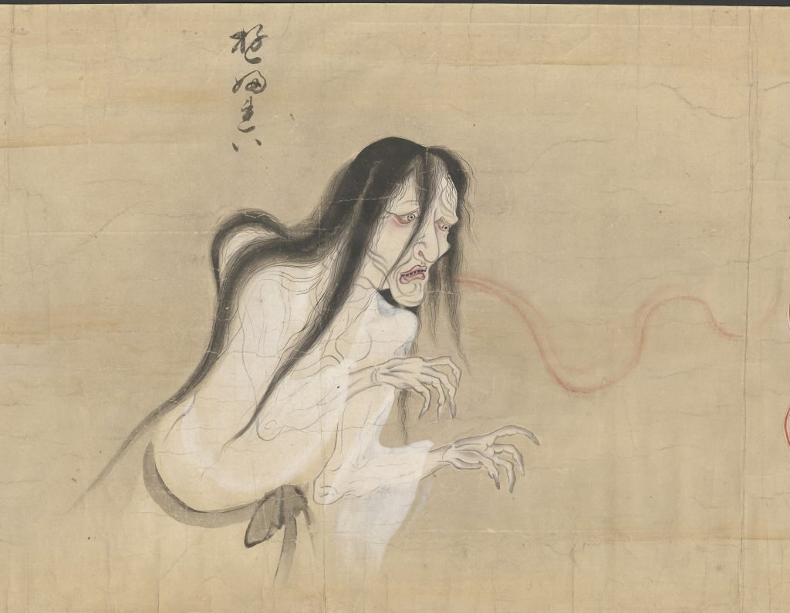
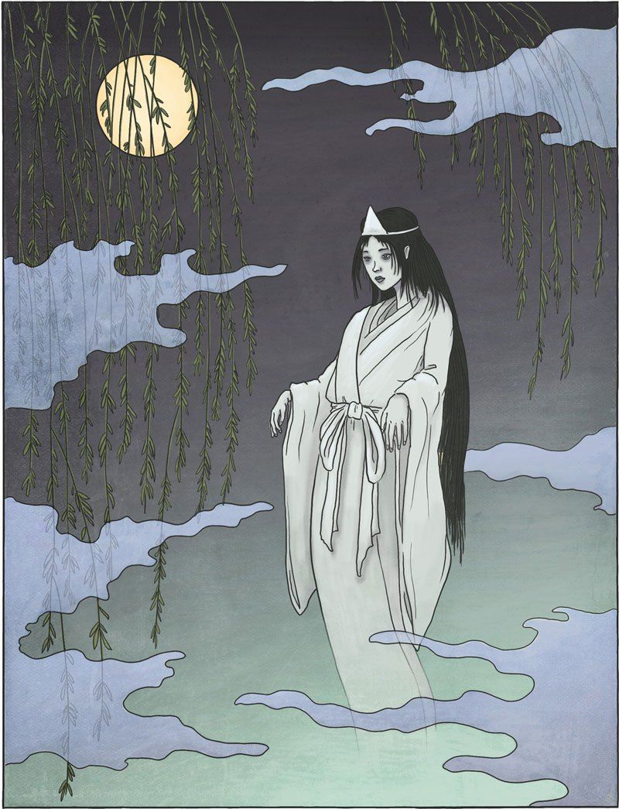
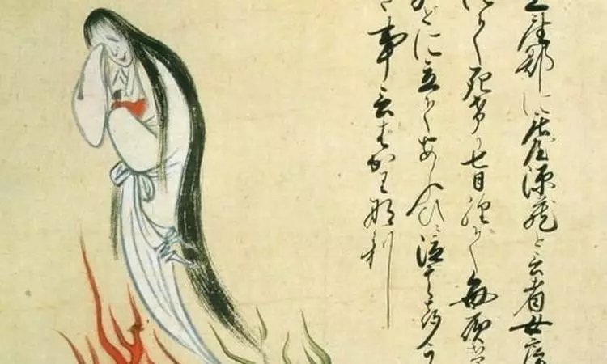

Юрэй (яп. 幽霊 ю:рэй, потусторонний (неясный) дух) — призрак умершего человека в японской мифологии. Отличительной особенностью классического юрэй является отсутствие у него ног, хотя в современном восприятии привидения могут быть и с ногами.
Согласно японскому фольклору, юрэй становятся:
Первое упоминание в литературе о мстительном привидении можно обнаружить ещё на страницах «Повести о Гэндзи», написанной более тысячи лет назад. Затем с обликом представителей загробного мира своих соотечественников стали знакомить авторы пьес для театра но. В XIV—XV веках привидения и духи стали основными героями на сцене этого театра. В годы периода Эдо (1603—1868) привидения прижились и на сцене театра кабуки. Известнейшие мастера ксилографии, например Кацусика Хокусай, посвящали этой теме свои гравюры.
Привидения в японском фольклоре не привязаны к конкретному месту обитания. Юрэй ассоциируются с заброшенными домами, старыми храмами, полуразрушенными горными лачугами, где они поджидают запоздалого путника. В отличие от ёкаев, за которыми закрепился образ незадачливых, простодушных, легковерных, хотя, бывает, и зловредных духов, юрэй часто становятся персонажами страшных историй. Иногда уже сам их облик приводит героя фольклорных произведений в ужас. У привидения в женском обличье вместо лица может оказаться полупрозрачный шар с одним глазом на подбородке, или неизвестная красавица оголит свой локоть, а с него будут смотреть, не моргая, целых два или три глаза. Души этих страдальцев (воинов, брошенных жён, несчастных влюблённых), не находя покоя, бродят по земле, чаще всего вокруг мест, связанных с их гибелью, в надежде на отмщение
